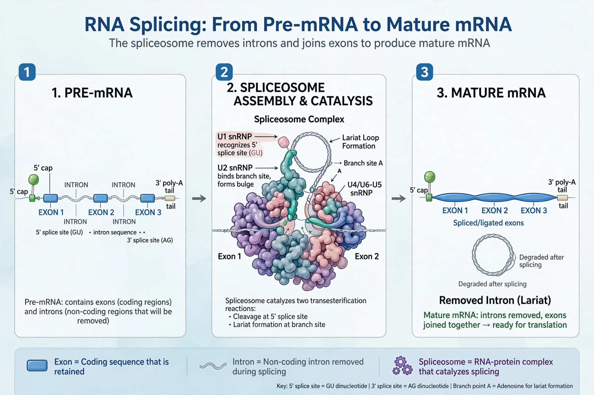

RNA splicing is a form of RNA processing in which a newly made precursor messenger RNA (pre-mRNA) is transformed into mature mRNA by removing introns (non-coding regions) and joining exons. It occurs in eukaryotes, mainly in the nucleus, carried out by the spliceosome.

Splicing proceeds by two transesterification reactions: the branchpoint adenosine attacks the 5' splice site, forming a lariat intron, then the freed exon attacks the 3' splice site, ligating exons. Consensus sequences GU (5'), AG (3') and the branchpoint mark introns.
Besides spliceosomal splicing there is self-splicing (group I and II introns, ribozymes) and tRNA splicing. Alternative splicing lets one gene produce multiple proteins — central to human proteome diversity.
Splicing mutations cause diseases including spinal muscular atrophy, beta-thalassemia and many cancers; splice-modulating drugs such as nusinersen exploit the pathway.
Intron · Exon · Messenger RNA